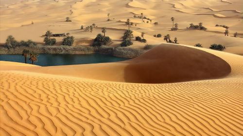
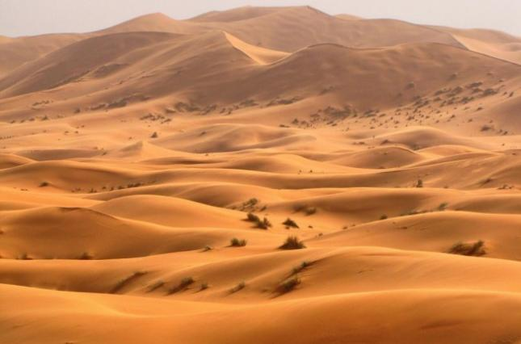
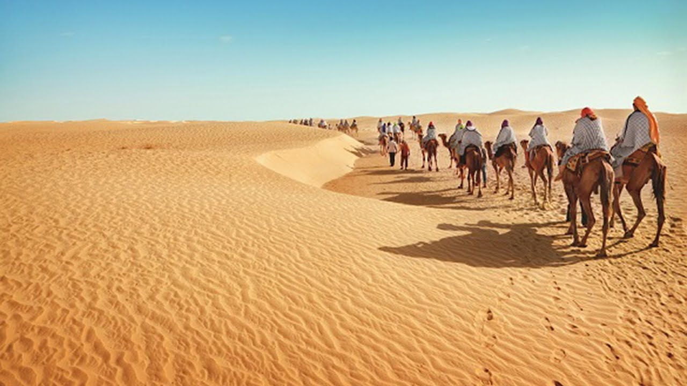

Пустыня-природная зона,характеризующаяся преимущественно или полностью равнинной поверхностью, разреженностью или отсутствием флоры и специфической фауной.
Бывают песчаные, каменистые, глинистые, солончаковые пустыни.Так же существуют арктические пустыни
Самая известная песчаная пустыня — Сахара (самая большая песчаная пустыня по площади), занимающая всю северную часть африканского континента
Всего пустыни занимают более 16,5 млн км² (без учёта Антарктиды), или около 11 % поверхности суши. С Антарктидой более 20 %.
Во многих пустынях почти отсутствуют осадки.Растительный покров почти отсутствует.
Песчаные пустыни населены из растений в основном колючими кустарниками, из животных — пресмыкающимися и мелкими степными животными. В песчаных пустынях над местами залегания подземных вод встречаются оазисы — «островки» с густой растительностью и водоёмами
Снежные пустыни в основном находятся за полярными кругами и населены животными, устойчивыми к холоду.
  